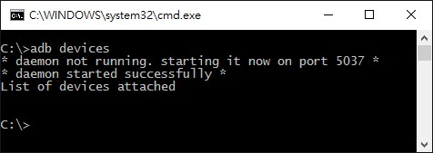

Launch command line of windows
1.1 Use Windows key + R to launch run window
1.2 Keyin cmd and select OK
Check device connection
2.1 Keyin adb devices 
2.2 Zjg6MDI6Nzg6ODE6MDA6MWI is device id for example
2.3 If there is not any devices, please check USB cable or driver in device manager 
ADB help
|
|
APK install to Embux Android deices from PC
4.1 Install directly
adb install XXXXX.apk
XXXXX is the apk file name.
4.2 Copy apk to device then install
adb root
adb remount
adb push XXXXX.apk /system/app
then
adb shell
go to /system/app install it
or install it from device